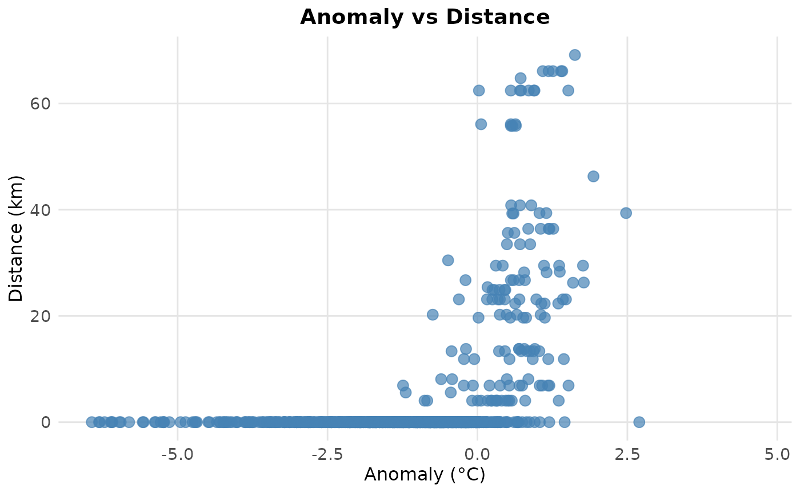
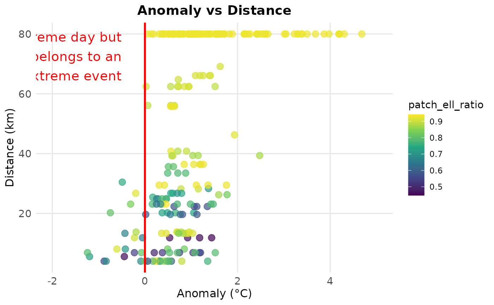

vignettes/k_data_merge.Rmd
k_data_merge.RmdMerge the ouputs of BEE.calc.metrics_point(), BEE.calc.metrics_morpho() and/or BEE.calc.escape() in one df per pixel. Among other thing, this allows to link daily patch to an extreme event.
data_metrics_point:
The list of dataframe provided in the ouput of
BEE.calc.metrics_point().
data_metrics_morpho:
The list of dataframe provided in the output of
BEE.calc.metrics_morpho() (The first object, the second on is a
spatraster not used here.) data_escape:
The list of dataframe provided in the output of
BEE.calc.escape(). crs The CRS of the
Spatraster that you have used so far to compute the baseline and
identify the extreme event. The function does not modify the CRS of your
coordinates. CRS is only used to build polygons and check that the
datasets you have provided cover the same area.
You will receive a warning if :
library(BioExtremeEvent)
file_name_1 <- system.file(file.path("extdata",
"escape_pixel.rds"),
package = "BioExtremeEvent")
escape_df_list <- readRDS(file_name_1)
file_name_2 <- system.file(file.path("extdata",
"metrics_morpho_pixel.rds"),
package = "BioExtremeEvent")
morpho_df_list <- readRDS(file_name_2)
file_name_3 <- system.file(file.path("extdata",
"metrics_points_pixel.rds"),
package = "BioExtremeEvent")
point_df_list <- readRDS(file_name_3)
library(BioExtremeEvent)
merged_ouputs <- BEE.data.merge( data_metrics_point = point_df_list,
data_metrics_morpho = morpho_df_list,
data_escape = escape_df_list,
crs= "EPSG:4326")## Warning: [as.points] returning a copy
## Warning: [as.points] returning a copy
## Warning: [as.points] returning a copyYou can also provide only two data_… arguments to the function.
The output is a list of dataframe, you can save it as follow:
saveRDS(merged_ouputs, file = "your_path/data/merged_ouputs.rds")You can know work on the outputs of sevral functions :
pixel_108 <- merged_ouputs[["108"]] #Dont forget the quote or you may get an unexpected pixel
#Check if the more intense day are also the one for which the distance to escape from the extreme event are bigger.
library(ggplot2)
ggplot(pixel_108, aes(x = as.numeric(anomaly_qt), y = as.numeric(distance)/1000)) +
geom_point(color = "steelblue", size = 3, alpha = 0.7) +
labs(
title = "Anomaly vs Distance",
x = "Anomaly (°C)",
y = "Distance (km)"
) +
theme_minimal() +
theme(
plot.title = element_text(size = 14, face = "bold", hjust = 0.5),
axis.title = element_text(size = 12),
axis.text = element_text(size = 11),
panel.grid.major = element_line(color = "gray90"),
panel.grid.minor = element_blank()
)## Warning in FUN(X[[i]], ...): NAs introduced by coercion## Warning: Removed 97 rows containing missing values or values outside the scale range
## (`geom_point()`).
Since BEE.data.merge() only works with continuous daily data, the output also has continuous daily data. Therefore, many days in the output do not correspond to an extreme event. You can remove them as follows:
pixel_108 <- merged_ouputs[["108"]]
pixel_108_EE <- pixel_108[pixel_108$cleaned_value==1,]
library(ggplot2)
ggplot(pixel_108_EE, aes(x = pixel_108_EE$anomaly_qt, y = as.numeric(pixel_108_EE$distance)/1000, color = patch_ell_ratio)) +
geom_point(size = 3, alpha = 0.7) +
geom_vline(xintercept = 0, color = "red", linetype = "solid", linewidth = 1) +
annotate(
"text",
x = -0.5,
y = Inf,
label = "Not an extreme day but\nbelongs to an\nextreme event",
color = "red",
hjust = 1,
vjust = 1.2,
size = 5,
fontface = "plain"
) +
labs(
title = "Anomaly vs Distance",
x = "Anomaly (°C)",
y = "Distance (km)",
color = "patch_ell_ratio"
) +
xlim(-2, 5) +
scale_color_viridis_c() +
theme_minimal() +
theme(
plot.title = element_text(size = 14, face = "bold", hjust = 0.5),
axis.title = element_text(size = 12),
axis.text = element_text(size = 11),
panel.grid.major = element_line(color = "gray90"),
panel.grid.minor = element_blank(),
legend.position = "right"
)## Warning in FUN(X[[i]], ...): NAs introduced by coercion## Warning: Use of `pixel_108_EE$anomaly_qt` is discouraged.
## ℹ Use `anomaly_qt` instead.## Warning: Use of `pixel_108_EE$distance` is discouraged.
## ℹ Use `distance` instead.## Warning: Removed 97 rows containing missing values or values outside the scale range
## (`geom_point()`).